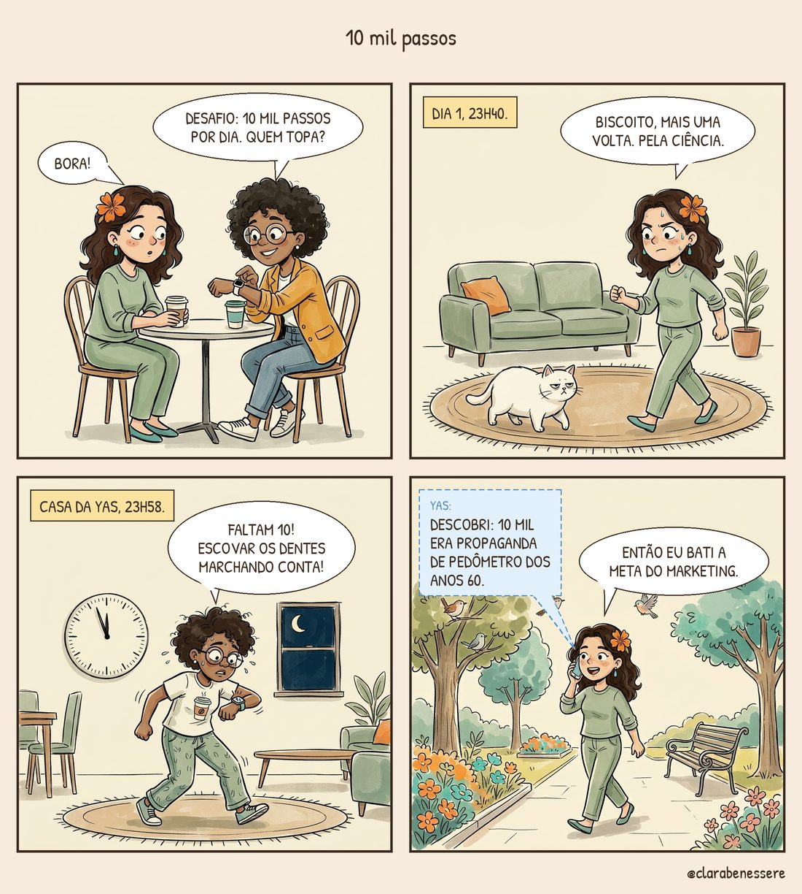

Os 10 mil passos nasceram num anúncio
A Yas me mostrou o relógio como quem mostra uma medalha olímpica: “Desafio da semana: 10 mil passos por dia. Quem topa?”. Eu topei, claro. Eu topo tudo antes de pensar.
No primeiro dia, às 23h40, eu estava dando voltas na sala atrás do Biscoito, que andava devagar só para me provocar. “Mais uma volta, Biscoito. Pela ciência.” Ele não achou graça.
A Yas foi pior. Às 23h58 ela me mandou uma mensagem: “Faltam 10! Escovar os dentes marchando conta?”. Eu não respondi, porque estava ocupada rindo.
No dia seguinte ela me ligou, indignada: “Descobri que o 10 mil era propaganda de pedômetro dos anos 60”. E eu, passeando numa praça linda que eu nunca tinha reparado: “Então eu bati a meta do marketing”.

O que a ciência mostra
- O número veio do marketing. A meta dos 10 mil passos ficou famosa com um pedômetro japonês dos anos 1960, cujo nome era algo como “medidor de 10 mil passos”. Não saiu de um estudo.
- Andar faz bem, e muito. Uma meta-análise com 15 estudos e cerca de 47 mil pessoas, publicada em 2022 na revista The Lancet Public Health, encontrou menor risco de morte quanto mais passos por dia, até um ponto.
- O benefício estabiliza. Nesse estudo, o ganho parou de crescer por volta de 6 a 8 mil passos por dia para pessoas com 60 anos ou mais, e de 8 a 10 mil para quem tinha menos de 60.
- Qualquer aumento conta. Quem anda pouco e passa a andar um pouco mais já sai ganhando. A meta é se mexer, não bater um número redondo.
Hoje a Yas e eu fazemos uma caminhada juntas no sábado de manhã. Ela não olha o relógio. Mentira, olha sim. Mas só uma vez. 🚶♀️
Fontes
- Paluch AE et al. Daily steps and all-cause mortality: a meta-analysis of 15 international cohorts. The Lancet Public Health, 2022. DOAJ
- Resumo do estudo: o benefício aumenta e depois estabiliza. Hospital Healthcare Europe (em inglês)
- InfoMoney: “Andar 10 mil passos por dia é o ideal para a saúde? Cientistas explicam”. infomoney.com.br
A Clara é uma personagem e este blog é informativo. Ele não substitui uma consulta com profissional de saúde.